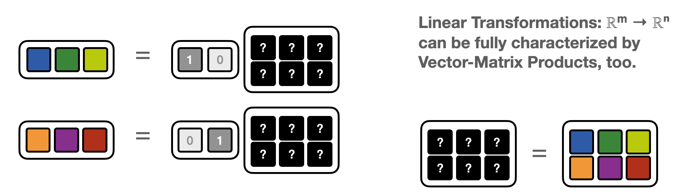
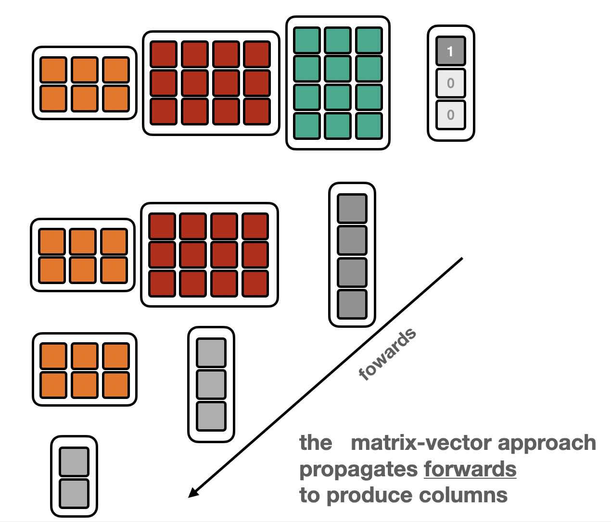
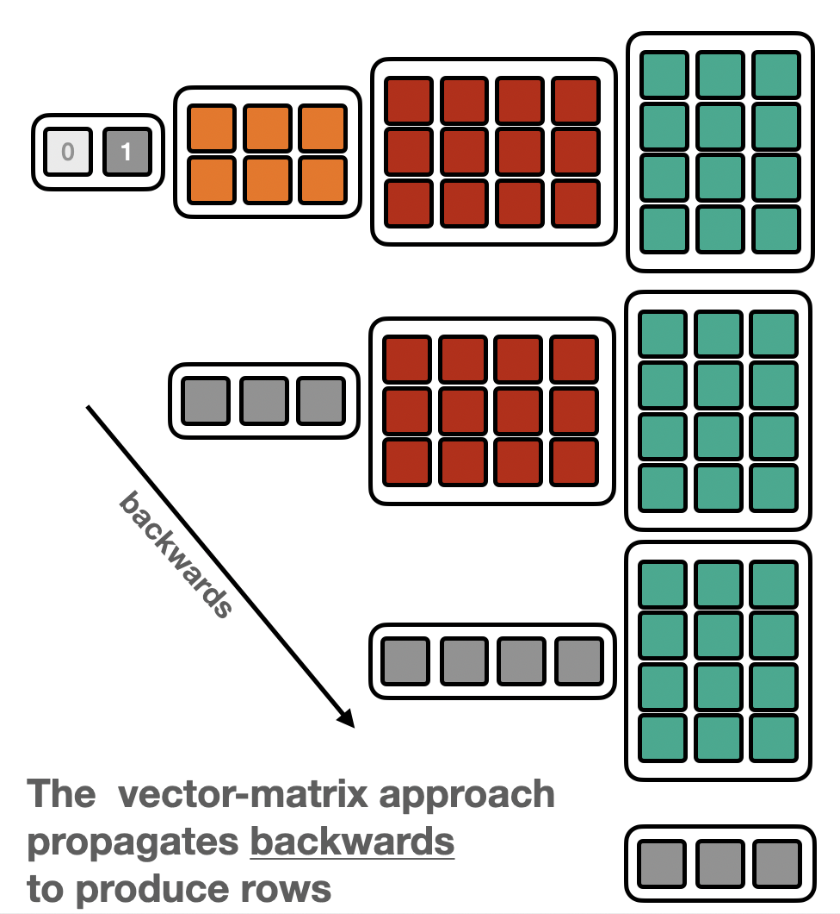
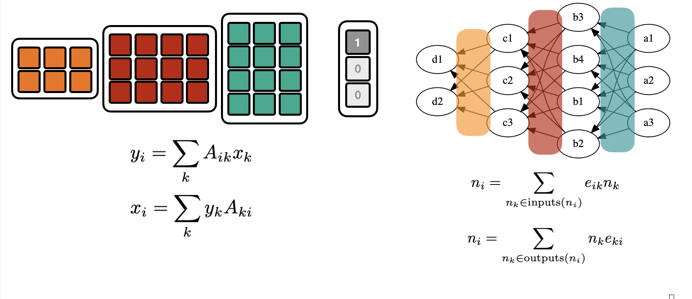
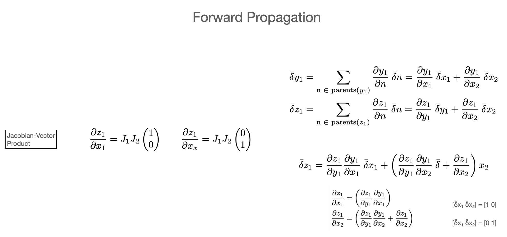
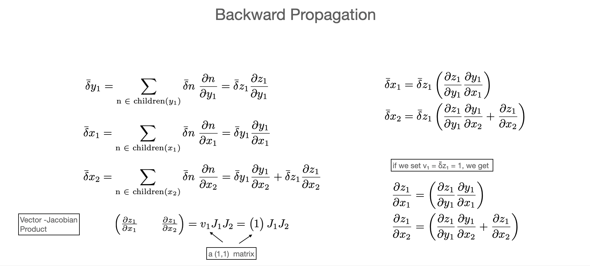

Tutorial on Automatic Differentiation¶
(by Lukas Heinrich. See: pyhep2020-autodiff-tutorial )
Introduction¶
Welcome to this tutorial on automatic differentiation. Automatic Differentiation is a method to compute exact derivatives of functions implements as programs. It’s a widely applicable method and famously is used in many Machine learning optimization problems. E.g. neural networks, which are parametrized by weights \(\text{NN}(\text{weights})\) are trained by (stocastic) gradient descent to find the minimum of the loss function \(L\) where
This means that efficient algorithms to compute derivatives are crucial.
Aside from ML, many other use-cases require gradients: standard statistical analysis in HEP (fitting, hypothesis testing, …) requires gradients. Uncertainty propagation (e.g. track parameters) uses gradients, etc..
import pyhf
pyhf.set_backend('jax')
import jax
import jaxlib
import matplotlib.pyplot as plt
import numpy as np
import jax.numpy as jnp
Other approaches to differentiation¶
Before diving into automatic differentiation, let’s review how my might otherwise compute derivatives
Finite Differences¶
A common appraoch to approximate gradients of a black-box function is to evaluate it at close-by points \(x\) and \(x+Δx\) and
\(\frac{\partial f}{\partial x} \approx \frac{f(x) - f(x+\Delta x}{\Delta x}\) if \(\Delta x\) is sufficiently small
def black_box_func(x):
return x**3+30
def true_gradient_func(x):
return 3*x**2
def plot_gradients(nsteps,title):
xi = np.linspace(-5,5,nsteps)
yi = black_box_func(xi)
approx_gradient = np.gradient(yi,xi)
true_gradient = true_gradient_func(xi)
plt.plot(xi,yi, label = 'black-box func')
plt.scatter(xi,yi)
plt.plot(xi,approx_gradient, label = 'finite diff grad')
plt.scatter(xi,approx_gradient)
plt.plot(xi,true_gradient, label = 'true grad')
plt.scatter(xi,true_gradient)
plt.legend()
plt.title(title)
plt.show()
plot_gradients(11, title = 'it is pretty bad if Δx is too large')
plot_gradients(41, title = 'it gets better at the cost of many evaluations')
while only approximate, finite differences is *simple*. I don't need to know anything about the function beyond having the ability to *evaluate* it
This way I can compute gradients of functions encoded as a computer program, and it works in any programming language
For multivariate (possibly vector-valued) functions $\vec{f}(\vec{x}) = f_i(x_1,x_2,\dots,x_n)$ one needs to compute a finite difference gradient for each partial derivative $\frac{\partial f}{\partial x}$ in order to get the full jacobian / total derivative $df_i = J_{ik} dx_k\; J_{ik} = \frac{\partial f_i}{\partial x_k}$
In high dimensions, the number of required evaluations explodes!
Finite Differences:
Pro: easy to to, works in any language, no “framework needed”
Con: inaccurate unless one does a lot of evaluations
Con does not scale to large dimensions
Symbolic Differentiation in a CAS¶
Computer Algebra Systems (CAS), such as Mathematica (or sympy) can manipulate functional expressions and know about differentiation rules (and many other things)
If the function / the prograrm which we want to derive is available as such an expression the symbolic differentiation can produce exact gradients
import sympy
def function(x):
return x**3
def true_deriv(x):
return 3*x**2
symbolic_x = sympy.symbols('x')
symbolic_func = function(symbolic_x)
symbolic_func
Using lambdify we can turn it into a normal python function we can evaluate
xi = np.linspace(-5,5,11)
yi = sympy.lambdify(symbolic_x,symbolic_func)(xi)
plt.plot(xi,yi)
plt.scatter(xi,yi)
<matplotlib.collections.PathCollection at 0x7f96f85724c0>
symbolic_func is now an experssion which we can differentiate symbolically
symbolic_deriv = symbolic_func.diff(symbolic_x)
symbolic_deriv
def plot_symbolic(nsteps,title):
xi = np.linspace(-5,5,nsteps)
yi = sympy.lambdify(symbolic_x,symbolic_func)(xi)
plt.scatter(xi,yi)
plt.plot(xi,yi, label = 'function')
yi = true_deriv(xi)
plt.plot(xi,yi)
plt.scatter(xi,yi, label = 'true deriv')
yi = sympy.lambdify(symbolic_x,symbolic_deriv)(xi)
plt.plot(xi,yi)
plt.scatter(xi,yi, label = 'symbolic deriv')
plt.legend()
plt.title(title)
plt.show()
plot_symbolic(11,title = 'the symbolid derivative is always exact')
plot_symbolic(4, title = 'it does not matter where/how often you evaluate it')

Chain Rule in CAS¶
We can even handle function compositions
def f1(x):
#standard operations are overloaded
return x**2
def f2(x):
#note here we use a special cos function from sympy
#instead of e.g. np.cos or math.cos
return sympy.cos(x)
composition = f2(f1(symbolic_x))
composition
composition.diff(symbolic_x)
Since sympy knows about the chain rule it can differentiate accordingly
Problems with Symbolic Differentiation¶
This looks great! We get exact derivatives. However, there are drawbacks
Need to implement it in CAS
Most functions we are interested in are not implemented e.g. Mathematica. Rather we have loads of C, C++, Python code that we are interested in.
But ok, sympy alleviates this to some degree. The functions
f1 and f2 are fairly generic since they use operator
overloading. So a symbolic program and a “normal” program
could only differ by a few import statements
from sympy import cos
def f1(x):
return x**2
def f2(x):
return cos(x)
versus:
from math import cos
def f1(x):
return x**2
def f2(x):
return cos(x)
Note the code is almost exactly the same
But not all our functions are so simple!
Expression swell
Let’s look at a quadratic map which is applied a few times
def quadmap(x):
return x**2 + 3*x + 4
def func(x):
for i in range(6):
x = quadmap(x)
return x
quad_6_times = func(symbolic_x)
quad_6_times
This looks pretty intimidating. What happened? Symbolic programs run through the prgram and accumulate the full program into a single expression
If we would just blindly differentiate this it would look like this
quad_6_times.diff(symbolic_x)
This looks even worse!
Also note that that if we just blindly substitute x for some value e.g. x=2, we would be computing a lot of the same terms manyt times. E.g. in the above expression \(x^2+3x+4\) appears in a lot of places due to the “structure’ of the original progrm
If you knew the structure of the program you likely could precompute some of these repeating terms. However once it got all expanded all this knowledge about the structure is gone!
Modern CAS can recover some of this by finding “common subexpressions” (CSE)
sympy.cse(quad_6_times)
([(x0, x**2),
(x1, (3*x + x0 + 4)**2),
(x2, (9*x + 3*x0 + x1 + 16)**2),
(x3, (27*x + 9*x0 + 3*x1 + x2 + 52)**2),
(x4, (81*x + 27*x0 + 9*x1 + 3*x2 + x3 + 160)**2)],
[729*x + 243*x0 + 81*x1 + 27*x2 + 9*x3 + 3*x4 + (243*x + 81*x0 + 27*x1 + 9*x2 + 3*x3 + x4 + 484)**2 + 1456])
But it’s not as automatic and may note find all relevant subexpressions. In any case it’s trying hard to recover some of the structure that is already implicitly present in the prograam we want to differentiate
Control Flow
In addition to looping constucts like above, a lot of the functions we are interested in have control flow structures like if/else statements, while loops, etc..
If we try to create a symbolic expression with conditionals we fail badly
def func(x):
if x > 2:
return x**2
else:
return x**3
try:
symbolic_result = func(symbolic_x)
except TypeError as err:
print(err)
cannot determine truth value of Relational
That’s too bad because this is a perfectly respectable function almost everywhere
xi = np.linspace(-2,5,1001)
yi = np.asarray([func(xx) for xx in xi])
plt.plot(xi,yi)
plt.scatter(xi,yi)
plt.title("pretty smooth except at x=2")
plt.show()
If we could afford finite diffences it would compute gradients just fine.
g = np.gradient(yi,xi)
plt.plot(xi,g)
plt.scatter(xi,g)
plt.ylim(-2,10)
plt.title('''\
parabolesque gradient in x^3 region,
linear in x^2 region as expected''');
In short: symbolic differentiation is not our saving grace.
Pro: Gradients are exact, if you can compute them
Con: Need to implement in CAS. Full-featured Cas not easily available in all languages
Con: lead to expression swell by losing any structure of the program (needs to be recovered separately0
Con: Cannot handle common control-flow structures like loops and conditionals easily
What we need¶
To recap:
Finite differences is
easy to implement in any language
handles arbitrary (halting) programs but
is inaccurate unless we’re ready to pay a large computational overhead
Symbolic differentiation is:
exact to machine precision
can lead to exccessive / inefficient computation if not careful
cannot handle complex programs with control flow structures
So what we need is a third approach!
One, that is
exact
efficient
can handle arbitrayr programs
that is easy to implement in many languages
This third approach is ‘Automatic’ differentiation.
Short Interlude on Linear Transformations¶
Before we start, let’s first look at linear transformations* from ℝᵐ → ℝⁿ:
With a given basis, this is representable as a (rectangular0 matrix:
For a given linear problem, there are few ways we can run this computation
full matrix computation
i.e. we store the full (dense) \(nm\) elements of the rectangular matrix and compute an explicit matrix multiplication.
The computation can be fully generic for any matrix
def result(matrix, vector):
return np.matmul(matrix,vector)
sparse matrix computation
If many \(A_{ij}=0\), it might be wasteful to expend memory on them. We can just create a sparse matrix, by
storing only the non-zerro elements
storing a look-up table, where those elements are in the matrix
The computation can be kept general
def result(sparse_matrix, vector):
return sparse_matmul(sparse_matrix,vector)
matrix-free computation
In many cases a linear program is not explicitly given by a Matrix, but it’s given as code / a “black-box” function. As long as the computation in the body of keeps to (hard-coded) linear transformation the program is linear. The matrix elements are no longer explicitly enumerated and stored in a data structure but implicitly defined in the source code.
This is not anymore a generic computation, but each linear transformation is its own program. At the same time this is also the most memory efficient representation. No lookup table is needed since all constants are hard-coded.
def linear_program(vector):
z1,z2 = 0,0
z1 += A_11*x1
z2 += A_12*x2
z2 += A_22*x2
return [z1,z2]
Recovering Matrix Elements from matrix-free computations¶
Matrix-vector products¶
In the matrix-free setting, the program does not give access to the matrix elements, but only computes “matrix-vector products” (MVP)
We can use basis vectors to recover the matrix one column at a time

def matrix_vector_product(x):
x1,x2,x3 = x
z1,z2 = 0,0
z1 += 2*x1 #MVP statement 1
z2 += 1*x2 #MVP statement 2
z2 += 3*x3 #MVP statement 3
return np.asarray([z1,z2])
M = np.concatenate([
matrix_vector_product(np.asarray([1,0,0])).reshape(-1,1),
matrix_vector_product(np.asarray([0,1,0])).reshape(-1,1),
matrix_vector_product(np.asarray([0,0,1])).reshape(-1,1),
],axis=1)
print(f'M derived from matrix-vector products:\n{M}')
M derived from matrix-vector products:
[[2 0 0]
[0 1 3]]
Vector Matrix product (VMP)¶
The same matrix induces a “dual” linear map: ℝⁿ → ℝᵐ $\( x_k = y_i A_{ik}\)$
i.e. instead of a Matrix-vector product it’s now a vector-Matrix product (VMP)
If one has access to a “vector-Matrix” program corresponding to a matrix \(A\) one can again – as in the MVP-case – recover the matrix elements, by feeding in basis vectors.
This time the matrix is built one row at a time
{kind=link}
def vector_matrix_product(z):
x1,x2,x3 = 0,0,0
z1,z2 = z
x3 += z2*3 #VMP version of statement 3
x2 += z2*1 #VMP version of statement 2
x1 += z1*2 #VMP version of statement 1
return np.asarray([x1,x2,x3])
M = np.concatenate([
vector_matrix_product(np.asarray([1,0])).reshape(1,-1),
vector_matrix_product(np.asarray([0,1])).reshape(1,-1),
],axis=0)
print(f'M derived from vector-matix products:\n{M}')
M derived from vector-matix products:
[[2 0 0]
[0 1 3]]
Short Recap:¶
For a given linear transformation, characterized by a matrix \(A_{ij}\) we have a forward (matrix-vector) and backward (vector-matrix) map $\(y_i = A_{ij}x_k\)\( \)\(x_j = y_i A_{ij}\)$
and we can use either to recover the full matrix \(A_{ij}\)
Wide versus Tall Transformation¶
If you look at the code above, you’ll notice that the number of calls necessary to the MVP or VMP program is related to the dimensions of matrix itself.
For a \(n\times m\) matrix (for a map: ℝᵐ → ℝⁿ), you need as \(m\) calls to the “Matrix-vector” program to built the full matrix one-column-at-a-time. Likewise you need \(n\) calls to the “vector-Matrix” program to build the matrix one-row-at-a-time.
This becomes relevant for very asymmetric maps: e.g. scalar maps from very high-dimensional spaces \(\mathbb{R}^{10000} \to \mathbb{R}\) the “vector-Matrix” appraoch is vastly more efficient than the “Matrix-vector one. There’s only one row, so only one call too the VMP program is needed to construct the full matrix!
Similarly, functions mapping few variables into very high dimensional spaces \(\mathbb{R} \to \mathbb{R}^{10000}\) it’s the opposite: the “Matrix-vector” approach is much better suited than the “vector-Matrix” one (this time it’s a single column!).
Function Compositions¶
Of course copositions \((f\circ g)(x) = f(g(x))\) of linear maps are also linear, so the above applies.

Depending on whether the “Matrix-vector” or “vector-Matrix” appraoch is used, the data is propagated forwards or backwards.
Forward |
Backward |
|---|---|
 |
 |
From Matrices to Graphs¶
The “vector-Matrix” or “Matrix-vector” picture can be generalized to arrbitrary directed acyclic graphs.
In the “Matrix-vector” picture the node value is the edge-weighted sum of the “upstream nodes”.
In the “vector-Matrix” picture the node value is the edge-weighted sum of its “downstream nodes”.
(one could in principle always recove a rectangular/matrix-like version of a DAG by inserting trivial nodes)
| | |
:———- : | : —— :
 | 
def graph_like(x):
x1,x2,x3 = x
y1 = 2*x1+x2
z1,z2 = y1+2*x3,x3-y1 #note that we reach "over" the "ys" and diectly touch x_n
return np.asarray([z1,z2])
def matrix_like(x):
x1,x2,x3 = x
y1 = 2*x1+x2
y2 = x3 #can just introduce a dummy variable to make it matrix-like
z1,z2 = y1+2*x3,y2-y1
return np.asarray([z1,z2])
M = np.concatenate([
matrix_like(np.asarray([1,0,0])).reshape(-1,1),
matrix_like(np.asarray([0,1,0])).reshape(-1,1),
matrix_like(np.asarray([0,0,1])).reshape(-1,1),
],axis=1)
print(f'M derived from matrix like computation:\n{M}')
M = np.concatenate([
graph_like(np.asarray([1,0,0])).reshape(-1,1),
graph_like(np.asarray([0,1,0])).reshape(-1,1),
graph_like(np.asarray([0,0,1])).reshape(-1,1),
],axis=1)
print(f'M derived from graph-like products:\n{M}')
M derived from matrix like computation:
[[ 2 1 2]
[-2 -1 1]]
M derived from graph-like products:
[[ 2 1 2]
[-2 -1 1]]
Derivatives¶
Why are we talking about linear transformations? After all lot of the code we write is non-linear! However, derivatives are always linear.
And derivatives (the jacobian) of a composition \(f\circ g\) is the composition of linear derivatives (the jacobians of each map) i.e. the full jacobian Matrix is the result of multipying all Jacobians of the composition. $\(J = J_0 J_1 J_2 J_3 \dots J_n \)$
(This is just the chain rule) $\(z = f(y) = f(g(x))\hspace{1cm} \frac{\partial f_i}{\partial x_j} = \frac{\partial f_i}{\partial z_j}\frac{\partial z_j}{\partial x_k}\)$
I.e. finding derivatives, means characterizing the jacobian matrix. From the above discussion, we can use the “Jacobian-vector product” (JVP, builds Jacobians column-wise) or “vector-Jacobian product” (builds Jacobians row-wise) approach.
In the language of automatic differentiation
Jacobian-vector products (JVP) = forward mode (forward propagation)
vector-Jacobian products (VJP) = reverse mode (reverse propagation)
Example¶
Let’s work this out on a very simple problem

In the forward pass we use “Matrix-vector” products and need to do two evaluation
{kind=link}
In the backward pass we use “vector-Matrix” products and need to do only a single evaluation
{kind=link}
Both approaches give the same result. Since this is a map from \(\mathbb{R}^2 \to \mathbb{R}^1\) the backward pass is more efficient than the forward pass
Let’s look at a real-life example
This is easy python code
def mul_func(x1,x2):
return x1*x2
def sum_func(x1,x2):
return x1+x2
def function(x):
x1,x2 = x
y = mul_func(x1,x2)
z = sum_func(y,x2)
return z
print(function([2,4]))
12
In the forward pass, an autodiff system needs to create a JVP implementation for each elementary operation
def mul_jvp(x1,dx1,x2,dx2):
y = mul_func(x1,x2)
dy = x1*dx2 + x2*dx1
return y, dy
def sum_jvp(x1,dx1,x2,dx2):
return sum_func(x1,x2), dx1 + dx2
def function_jvp(x,dx):
x1,x2 = x
dx1,dx2 = dx
y, dy = mul_jvp(x1,dx1,x2,dx2)
z, dz = sum_jvp(y,dy, x2, dx2)
return z,dz
Since in the forward pass we build “column-at a time” and our final jacobian is has shape (1x2), i.e. two columns we need two forward passes to get the full Jacobian. Not that for eacch forward pass we also get the fully computed functino value delivered on top!
Also note that the “JVP” version of the functino has the same structure as the original function. For each call in the original program there is an equivalent call in the JVP program. However the JVP call does always two things at once
compute the nominal result
compute the differentials
So it has roughly 2x the run-time as the original program (depending on the complexity of the derivatives). Said another way: computing the one-pass in the derivative has the same computational complexity as the function itself.
print(function_jvp([2,4],[1,0]))
print(function_jvp([2,4],[0,1]))
(12, 4)
(12, 3)
For the backward pass we build “row-at-a-time’. For each elementary operation we need to build a VJP implementation
def mul_vjp(x1,x2,dx1,dx2,dout):
dx2 += dout * x1
dx1 += dout * x2
return dx1,dx2
def sum_vjp(x1,x2,dx1,dx2,dout):
dx1 += dout * 1
dx2 += dout * 1
return dx1,dx2
def function_vjp(x,dz):
#run forward
x1,x2 = x
y = mul_func(x1,x2)
z = sum_func(y,x2)
#zero gradients
dy = 0
dx1 = 0
dx2 = 0
#run backward
dy,dx2 = sum_vjp(y,x1, dy, dx2, dz)
dx1,dx2 = mul_vjp(x1,x2, dx1, dx2, dy)
return z,[dx1,dx2]
Here, we see the power of backward propagation (or the reverse mode) we get all gradients of the single row ine oone go. Since this Jacobian only has one row, we’re done! And we get the function value delivered on top of the gradients as well!
print(function_vjp([2,4],1.0))
(12, [4.0, 3.0])
Again, let’s look at the “VJP” code. The forward pass is exactly the same as the original function. This just records the final result and all intermediate values, which we will need for the backward pass.
Moving on to the backward pass, we see again, as in JVP, it has the same structure as the forward pass. For each call to a subroutine there is an equivalent call in the backward pass to compute the VJP.
As in the JVP case, the computational complexity of one backward pass is roughly the same as the forward pass. Now unlike the JVP-case we only needed a single pass for all the gradients of this scalar function. So obtaining the full gradient of a function is only as expensive as the function itself.
Recap:¶
Above we have built a manual autodiff system. Let’s recap what we needed to do
define a set of operations we want to be differentiable
define sub-routines for nominal operations, JVP and VJP
Once given a program, we had to do the following
In the forward mode:
just replace the nominal function with the JVP one
for each variable in the program allocate a “differential” variable and pass it into the JVP whereever we also pass the nominal variable
In the backward mode:
Run the program forward, keep track of all values
keep track of the order of operations on a “record” of sorts
allocate “differential” variables for all values and initialize to zero
use the record to replay the order of operations backwards, passing along the appropriate differential values, and updating the relevant ones with the result of the VJP
All of this is pretty mechanistic and hence “automatable”. And given that it’s a very narrow domain of only implementing JVP/JVP operations this is easy to do in any language.
That’s why it’s automatic differentiation
What we gain from this is that we get
exact derivatives (to machine precision) for arbitrary composed of the operations we define
complexity of a derivative-pass through the program is of same order of complexity as the original program
often only a single pass is necessary (e.g. scalar multi-variate functions)
unlike symbolic differrentiation, the structure of the program is preserved and allows naturally to avoid repetitive calculations of the same values
(we will see that) arbitrary control flows are handles naturally
it’s something that is easy for a comoputer do and for a progarmmer to imlpement
Some notes on pros and cons:
In the forward mode:
the signature of each opeartion basically extends
float f(float x,float y,float z)
to
pair<float> f(float x,float dx,float y,float float dy, float z,float dz)
if you use composite types (“dual numbers”) that hold both x,dx you can basically keep the signature unchanged
f(dual x, dual x, dual z)
together with operator overloading on these dual types e.g.
dual * dualyou can essentially keep the source code unchangedfloat f(float x, float y): return x*y
->
dual f(dual x,dual y): return x*y
That means it’s very easy implement. And memory efficient, no superfluous values are kept when they run out of scope.
But forward more better for vector-value functions of few parameters
In the reverse mode:
very efficient, but we need to keep track of order (need a “tape” of sorts)
since we need to access all intermediate varriables, we can run into memory bounds
the procedurer is a bit more complex than fwd: 1) run fwd, 2) zero grads 3) run bwd
I don’t want to implement an autodiff system.. Aren’t there libraries for this??¶
Yes there are! And a lot of them in many languages. On the othe rhand, try finding CAS systems in each of those

This is PyHEP, so let’s focus on Python. Here, basically what you think of as “Machine Learning frameworks” are at the core autodiff libraries
Tensorflow
PyTorch
JAX
Let’s focus on jax
import jax
import jax.numpy as jnp
def f(x):
return x**2
jax.numpy is almost a drop-in rerplacement for numpy. I do import jax.numpy as jnp but if you’re daring you could do import jax.numpy as np
x = jnp.array([1,2,3])
y = jnp.array([2,3,4])
/Users/cranmer/anaconda3/envs/stats-book-2/lib/python3.8/site-packages/jax/lib/xla_bridge.py:130: UserWarning: No GPU/TPU found, falling back to CPU.
warnings.warn('No GPU/TPU found, falling back to CPU.')
print(x+y)
print(x*y)
print(jnp.log(x))
print(jnp.exp(y))
[3 5 7]
[ 2 6 12]
[0. 0.69314718 1.09861229]
[ 7.3890561 20.08553692 54.59815003]
def f(x):
return x**3
print(f(4.0))
print(jax.grad(f)(4.0)) #boom!
print(jax.grad(jax.grad(f))(4.0)) #boom!
print(jax.grad(jax.grad(jax.grad(f)))(4.0)) #boom!
print(jax.grad(jax.grad(jax.grad(jax.grad(f))))(4.0)) #boom!
64.0
48.0
24.0
6.0
0.0
xi = jnp.linspace(-5,5)
yi = f(xi)
plt.plot(xi,yi)
[<matplotlib.lines.Line2D at 0x7f972aeb56a0>]
try:
jax.grad(f)(xi)
except TypeError as err:
print(err)
Gradient only defined for scalar-output functions. Output had shape: (50,).
Whoops, jax.grad defaults to reverse mode with a single backward pass, but through broadcasting we get a vector -> vector map. We can use some jax magic to “unbroadcast” the function, take the gradient and re-broadcast it
jax.vmap(jax.grad(f))(xi)
DeviceArray([7.50000000e+01, 6.90024990e+01, 6.32548938e+01,
5.77571845e+01, 5.25093711e+01, 4.75114536e+01,
4.27634319e+01, 3.82653061e+01, 3.40170762e+01,
3.00187422e+01, 2.62703040e+01, 2.27717618e+01,
1.95231154e+01, 1.65243648e+01, 1.37755102e+01,
1.12765514e+01, 9.02748855e+00, 7.02832153e+00,
5.27905040e+00, 3.77967514e+00, 2.53019575e+00,
1.53061224e+00, 7.80924615e-01, 2.81132861e-01,
3.12369846e-02, 3.12369846e-02, 2.81132861e-01,
7.80924615e-01, 1.53061224e+00, 2.53019575e+00,
3.77967514e+00, 5.27905040e+00, 7.02832153e+00,
9.02748855e+00, 1.12765514e+01, 1.37755102e+01,
1.65243648e+01, 1.95231154e+01, 2.27717618e+01,
2.62703040e+01, 3.00187422e+01, 3.40170762e+01,
3.82653061e+01, 4.27634319e+01, 4.75114536e+01,
5.25093711e+01, 5.77571845e+01, 6.32548938e+01,
6.90024990e+01, 7.50000000e+01], dtype=float64)
that looks better!
jax.grad(f) just returns another function. Of course we can just
take the gradient of that as well. And so on…
g1i = jax.vmap(jax.grad(f))(xi)
g2i = jax.vmap(jax.grad(jax.grad(f)))(xi)
g3i = jax.vmap(jax.grad(jax.grad(jax.grad(f))))(xi)
plt.plot(xi,yi, label = "f")
plt.plot(xi,g1i, label = "f'")
plt.plot(xi,g2i, label = "f''")
plt.plot(xi,g3i, label = "f'''")
plt.legend()
<matplotlib.legend.Legend at 0x7f97007d0c40>
Control Flow¶
Back when discussing symbolic differentiation we hit a snag when adding control flow through to our prorgam. In Jax this just passes through transparently.
Let’s compare this to finite differences. So far the only system we had to compute derivatives of control-flow-ful programs
def control_flow_func(x):
if x > 2:
return x**2
else:
return x**3
first_gradient_of_cflow = jax.grad(control_flow_func)
xi = jnp.linspace(-2,5,101)
yi = np.asarray([first_gradient_of_cflow(xx) for xx in xi])
plt.plot(xi,yi,c = 'k')
xi = jnp.linspace(-2,5,11)
yi = np.asarray([first_gradient_of_cflow(xx) for xx in xi])
plt.scatter(xi,yi, label = 'jax autodiff')
xi = jnp.linspace(-2,5,11)
yi = np.asarray([control_flow_func(xx) for xx in xi])
plt.scatter(xi,np.gradient(yi,xi), label = 'finite differences')
plt.legend()
<matplotlib.legend.Legend at 0x7f9718b2dee0>
We can start to see the benefits autodiff. Among other things, finite differnces becomes quite sensitive to exactly where the evaluation points are (e.g. wrt to the discontinuity)
As we compute higher derivatives, this error compounds badly for finite differences. But for autodiff, it’s smooth sailing!
second_gradient_of_cflow = jax.grad(first_gradient_of_cflow)
xi = jnp.linspace(-2,5,101)
yi = np.asarray([second_gradient_of_cflow(xx) for xx in xi])
plt.plot(xi,yi,c = 'k')
xi = jnp.linspace(-2,5,11)
yi = np.asarray([second_gradient_of_cflow(xx) for xx in xi])
plt.scatter(xi,yi, label = '2nd deriv jax autodiff')
xi = jnp.linspace(-2,5,11)
yi = np.asarray([control_flow_func(xx) for xx in xi])
plt.scatter(xi,np.gradient(np.gradient(yi),xi), label = '2nd deriv finite differences',)
plt.legend()
<matplotlib.legend.Legend at 0x7f96f8748f70>
Custom Operations¶
Not all our programs are so simple. Consider this
def func(x)
y_root = solve(x^2 + y^2 == 1,x = x, y_start = 2.0)
return y_root
solving this often goes through some iterative algorithm like Brent bracketing But, differentiating through the iteration is not the right solution.
We can add our own custom gradients
Recall the implicit function theorem $\( f(x,y) = x^2 + y^2 -1 = 0 \)$
How do we teach this an autodiff system:
Recall:
we can choose which operations we consider “fundamental”
we don’t need to constrain ourselves to the lowest possible representationo
import jax
from jax import core
import numpy as np
from jax.interpreters import ad
import scipy
import functools
import matplotlib.pyplot as plt
def findroot(f):
return scipy.optimize.brentq(f,a = 0,b = 10)
def func(x,y):
return x**2 + y**2 - 1
def y_for_x(x):
return findroot(functools.partial(func,x))
xi = np.linspace(-1,1)
yi = np.asarray([y_for_x(xx) for xx in xi])
plt.plot(xi,yi)
findrootjax_p = core.Primitive('findrootjax')
findrootjax_p.def_impl(lambda x: y_for_x(x))
ad.defvjp(findrootjax_p, lambda g, x: - x / y_for_x(x))
def findrootjax(x):
return findrootjax_p.bind(x)
jax.value_and_grad(findrootjax)(0.5)
xi = np.linspace(-1,1,101)
yi = [findrootjax(v) for v in xi]
plt.plot(xi,yi)
xi = np.linspace(-1,1,21)
vg = np.asarray([np.asarray(jax.value_and_grad(findrootjax)(v)) for v in xi])
plt.scatter(xi,vg[:,0])
plt.quiver(xi,vg[:,0],np.ones_like(vg[:,0]),vg[:,1],
angles = 'uv',
alpha = 0.5,
)
plt.gcf().set_size_inches(5,2.5)
In HEP¶
Of course we can use automatic differentiation for neural networks. But other things in HEP also can make use of gradients. A prime example where this is the case is statistical analysis
For a maximum likelihood fit we want to minimize the log likelihood
\(\theta^* = \mathrm{argmin}_\theta(\log L)\)
import jax
import jax.numpy as jnp
import numpy as np
import pyhf
import matplotlib.pyplot as plt
pyhf.set_backend('jax')
m = pyhf.simplemodels.hepdata_like([5.],[10.],[3.5])
pars = jnp.array(m.config.suggested_init())
data = jnp.array([15.] + m.config.auxdata)
m.logpdf(pars,data)
DeviceArray([-4.25748227], dtype=float64)
bestfit = pyhf.infer.mle.fit(data,m)
bestfit
DeviceArray([1., 1.], dtype=float64)
grid = x,y = np.mgrid[.5:1.5:101j,.5:1.5:101j]
points = np.swapaxes(grid,0,-1).reshape(-1,2)
v = jax.vmap(m.logpdf, in_axes = (0,None))(points,data)
v = np.swapaxes(v.reshape(101,101),0,-1)
plt.contourf(x,y,v, levels = 100)
plt.contour(x,y,v, levels = 20, colors = 'w')
grid = x,y = np.mgrid[.5:1.5:11j,.5:1.5:11j]
points = np.swapaxes(grid,0,-1).reshape(-1,2)
values, gradients = jax.vmap(
jax.value_and_grad(
lambda p,d: m.logpdf(p,d)[0]
), in_axes = (0,None)
)(points,data)
plt.quiver(
points[:,0],
points[:,1],
gradients[:,0],
gradients[:,1],
angles = 'xy',
scale = 75
)
plt.scatter(bestfit[0],bestfit[1], c = 'r')
plt.xlim(0.5,1.5)
plt.ylim(0.5,1.5)
plt.gcf().set_size_inches(5,5)
Thanks for joining the Tutorial!¶